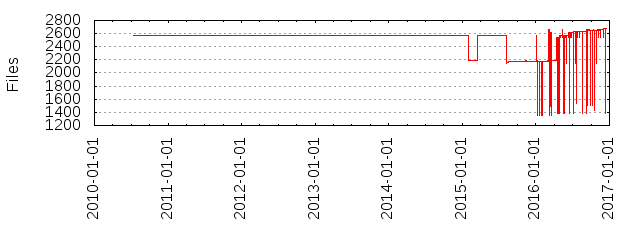

Files
- Total files
- 2674
- Total lines
- 24388
- Average file size
- 19342.15 bytes

| Extension | Files (%) | Lines (%) | Lines/file |
|---|
| 12 (0.45%) | 3144 (12.89%) | 262 |
| css | 10 (0.37%) | 4471 (18.33%) | 447 |
| dot | 8 (0.30%) | 342 (1.40%) | 42 |
| fa | 1 (0.04%) | 60 (0.25%) | 60 |
| fastq | 1 (0.04%) | 20 (0.08%) | 20 |
| hdr | 1 (0.04%) | 4 (0.02%) | 4 |
| html | 775 (28.98%) | 146234 (599.61%) | 188 |
| inc | 1 (0.04%) | 11 (0.05%) | 11 |
| jar | 6 (0.22%) | 7172 (29.41%) | 1195 |
| java | 14 (0.52%) | 1283 (5.26%) | 91 |
| jpg | 3 (0.11%) | 279 (1.14%) | 93 |
| js | 393 (14.70%) | 9041 (37.07%) | 23 |
| json | 2 (0.07%) | 132 (0.54%) | 66 |
| map | 327 (12.23%) | 1556 (6.38%) | 4 |
| md | 8 (0.30%) | 548 (2.25%) | 68 |
| md5 | 329 (12.30%) | 0 (0.00%) | 0 |
| mwb | 1 (0.04%) | 108 (0.44%) | 108 |
| mysql | 38 (1.42%) | 2566 (10.52%) | 67 |
| odp | 8 (0.30%) | 52686 (216.03%) | 6585 |
| pdf | 8 (0.30%) | 59332 (243.28%) | 7416 |
| pgsql | 38 (1.42%) | 2413 (9.89%) | 63 |
| pl | 14 (0.52%) | 3610 (14.80%) | 257 |
| pm | 126 (4.71%) | 27279 (111.85%) | 216 |
| png | 406 (15.18%) | 22784 (93.42%) | 56 |
| ppt | 1 (0.04%) | 1799 (7.38%) | 1799 |
| py | 9 (0.34%) | 729 (2.99%) | 81 |
| sh | 1 (0.04%) | 39 (0.16%) | 39 |
| sql | 52 (1.94%) | 549 (2.25%) | 10 |
| sqlite | 22 (0.82%) | 1644 (6.74%) | 74 |
| t | 41 (1.53%) | 4299 (17.63%) | 104 |
| tar | 2 (0.07%) | 691 (2.83%) | 345 |
| txt | 13 (0.49%) | 405 (1.66%) | 31 |
| xml | 1 (0.04%) | 67 (0.27%) | 67 |
| yml | 2 (0.07%) | 72 (0.30%) | 36 |